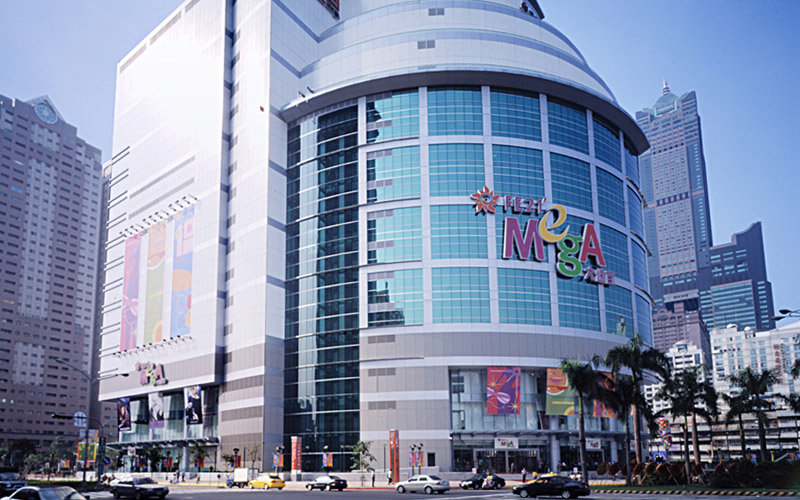

期末實作測試 學號:91135123 姓名:曾日森
知名商場資訊及介紹
高雄大遠百
概要
- 類型：商場
- 地點：高雄市苓雅區三多四路21號
- 開業日期：1973年10月10日
營業資訊
- 營業時間11:00-22:00

介紹
高雄大遠百是一座位於高雄市中心的大型商業建築，不僅僅是一個購物中心，更是地標性建築之一。
其建築工程必須考慮到多方面的因素，包括設計美觀與實用性的平衡、建材的選擇與使用、構造安全與防災措施的實施等。
特別是在高雄的熱帶氣候下，建築必須能夠有效地適應高溫多濕的環境，並確保室內空間的舒適性和能源效率。
此外，作為商業據點，大遠百的建築還需考慮到商戶的需求，如通風良好、交通便捷等方面，以吸引和服務大量的顧客和商家。
綜觀其建築工程，可以看到它不僅是商業活動的場所，更是城市發展的重要組成部分，體現了現代城市設計中商業、文化和社會需求的完美結合。